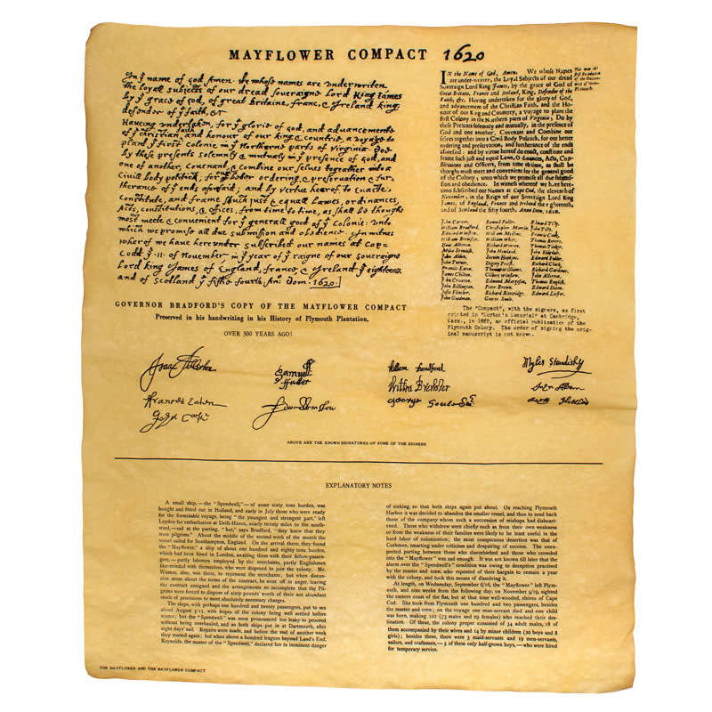

When the Mayflower anchored at Cape Cod in November 1620, the settlers realized they were outside the land covered by their original patent. They needed a way to keep order while they waited for a new legal agreement, so the male passengers wrote and signed the Mayflower Compact on November 11, 1620. They pledged to form a "civil body politick" for their "better ordering and preservation" and agreed to create "just and equal laws" for the good of the whole colony.
The term civil body politick is a key part of the document. The settlers used it because it was a common legal phrase for an organized community acting together under lawful authority, and it helped define their new union as a civil government instead of just a religious group. The Compact was not merely a promise to stand by one another. It was a clear statement that they were a political community capable of making laws together.
The real strength of the Compact is how simple and practical it was. It was not a long, complicated constitution, but a short agreement that bound the signers to obey the government and legal system they would establish in Plymouth Colony. In a time of deep uncertainty — before they had houses ashore or a secure legal footing — the Compact gave them a shared promise of order and survival.

Full Text of the Compact
The Signers
Textual Note
The original Mayflower Compact is lost, but the text survives in three early versions. These copies are associated with Edward Winslow's Mourt's Relation (1622), William Bradford's Of Plimoth Plantation (1646), and Nathaniel Morton's 1669 account. Morton's version is especially important because it includes the names of the 41 men who may have signed the document.
Selected Sources
- Massachusetts Government, "The Mayflower Compact."
https://www.mass.gov/news/the-mayflower-compact - General Society of Mayflower Descendants, "The Mayflower Compact."
https://themayflowersociety.org/history/the-mayflower-compact/ - Avalon Project, Yale Law School, "Mayflower Compact : 1620."
https://avalon.law.yale.edu/17th_century/mayflower.asp - Library of Congress, "A Civil Body Politic: The Mayflower Compact and 17th-Century Corporations."
https://blogs.loc.gov/law/2021/11/a-civil-body-politic-the-mayflower-compact-and-17th-century-corporations/ - Plimoth Patuxent Museums, "Mayflower and Mayflower Compact."
https://plimoth.org/for-students/homework-help/mayflower-and-mayflower-compact
Explore More Features
Dive deeper into the Mayflower story and meet the passengers who made the voyage.